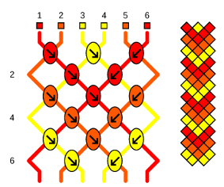

Allez voir la page du projet Bracelet Générateur sur Sourceforge pour les dernières mises à jour.
Prérequis
Le but de ce logiciel n'est pas de vous apprendre à faire des bracelets brésiliens mais de rendre la création de patrons plus facile. Donc, si vous ne savez pas faire les quatre types de nœuds, reportez vous à un tutoriel sur internet comme friendship-bracelets.net (en anglais), par exemple.
Téléchargement
Voir la page dédiée aux téléchargements.Installation
Avec l'exécutable Windows
Lancez bracelet-generator-1.3.1.exe et suivez les instructions de l’installateur (il est nécessaire d’avoir les droits d’administrateur pour effectuer l’installation).
Avec la version pour Ubuntu/Debian
Tout d’abord, il faut installer les dépendances manquantes parmi : python3-pil, python3-tk, ghostscript, zenity (optionnel). Pour vérifier si package est installé, vous pouvez utiliser la commande suivante :
$ dpkg-query -W package
Ensuite, pour installer Bracelet Générateur, lancez :
$ sudo dpkg -i bracelet-generator-1.3.1_all.deb
Toutes les dépendances seront installées automatiquement.
Si tout c’est bien passé, un raccourci se trouve maintenant dans la catégorie Graphisme du menu.
Vous pouvez aussi lancer le programme depuis le terminal en tapant bracelet-generator.
Avec la version pour Mac OS X
Décompresser l'archive. Placez BraceletGenerator.app dans le dossier /Applications. Pour pouvoir exporter les patrons en .png ou .jpg, il faut installer Ghostscript. Il est possible de le faire avec brew :
$ brew install ghostscript
Sinon, allez voir le site de Ghostscript.Avec le code source
Tout d’abord, il faut installer les dépendances manquantes parmi :
- Python 3
- Tkinter pour Python 3
- Pillow (Python Imaging Library)
- Ghostscript
- Zenity (optionnel, recommandé sous linux)
Linux
Python 3 est certainement déjà installé, mais il faut peut-être installer les autres. Les noms des paquets varient selon les distributions. Voici les noms des paquets pour :
- Ubuntu : python3-tk, python3-pil, ghostscript, zenity
- Archlinux : tk, python-pillow, ghostscript, zenity
$ pip3 install pillow
Décompressez l’archive et lancez bracelet-generator.py. S’il ne se passe rien, éditez les propriétés du fichier pour le rendre exécutable ou lancez le avec Python : ouvrez un terminal dans le dossier extrait et tapez
$ python3 bracelet-generator.py
Vous pouvez aussi installer Bracelet Générateur (requiert les droits de superutilisateur) avec$ python3 setup.py install
Ensuite le logiciel peut être lancé depuis un terminal avec
$ bracelet-generator
Si votre distribution linux utilise des fichier .desktop pour créer les entrées du menu, vous pouvez éditer le fichier bracelet-generator.desktop dans le dossier principal. Remplacez path_to_bracelet-generator-1.3.1-src par le chemin réel menant au dossier et placez le fichier dans /.local/share/applications (fonctionne au moins pour les distributions basées sur Debian et pour Archlinux).
Windows
Tkinter sera installé automatiquement avec Python. Mais il faudra installer le module Pillow séparément. Il faudra aussi installer Ghostscript.
- Python 3 : rendez-vous sur le site de Python et installez la dernière version de Python 3 (attention, n'installez pas Python 2.x).
- Pillow : rendez-vous sur la page de Pillow sur PyPI et téléchargez la version correspondant à l'architecture de votre OS et à la version de Python que vous avez installé. Par exemple, si vous avez un Windows 64 bits (ce qui est le plus probable) et si vous avez installé Python 3.5.x, vous devez télécharger Pillow-3.3.1.win-amd64-py3.5.exe.
- Ghostscript : rendez-vous sur le site de Ghostscript et téléchargez la version correspondant à l'architecture de votre OS.
Décompressez l'archive et lancez bracelet-generator.py. Si rien ne se passe, vous pouvez essayer de définir python comme le logiciel par défaut pour le lancer.
Autres systèmes d'exploitation
Je n'ai testé Bracelet Générateur que sous que sous Ubuntu (16.04 LTS), Archlinux et Windows (7 et 10), donc je ne sais pas quels problèmes vous pourriez rencontrer sous d’autres OS.
- Python 3 : rendez-vous sur le site de Python et installez la dernière version de Python 3 (attention, n'installez pas Python 2.x).
- Pillow : rendez-vous sur la page de Pillow sur PyPI et téléchargez la version correspondant à votre OS et à la version de Python que vous avez installé. Si vous ne la trouvez pas, allez voir la documentation de Pillow.
-
Ghostscript : rendez-vous sur
le site de Ghostscript
et téléchargez la version correspondant à votre OS.
Vous aurez peut-être besoin de télécharger le code source et de le compiler vous-même.
Sous OS X, Ghostscript peut être installé avec brew :
$ brew install ghostscript
Tkinter est parfois inclus dans la distribution Python standard ou est disponible sous la forme d'un paquet binaire (pour Linux ou BSD). Si vous utilisez Mac OS X , vous pouvez vous référer à https://www.python.org/download/mac/tcltk.
Décompressez l'archive et lancez bracelet-generator.py.
S'il ne se passe rien, essayez de définir Python comme programme par défaut pour lancer cette application.
Vous pouvez aussi le lancer depuis un terminal en tapant une commande similaire à :
$ python3 bracelet-generator.py
Langue
Le logiciel est en Français et en Anglais. J'ai utilisé gettext pour le traduire donc, si vous voulez ajouter ou améliorer une traduction, n'hésitez pas, le fichier BraceletGenerator.pot est disponible dans le dossier po/ du code source.
Guide d'utilisation
Fenêtre principale

- Pour changer la couleur d'un fil, cliquez sur le petit carré situé juste au-dessus. Un sélecteur de couleur s'ouvrira.
- Pour modifier un nœud, cliquez dessus. Les quatre types de nœuds défileront successivement (défilement inversé avec clic droit).
-
Pour ajouter ou enlever des lignes / fils, il suffit d'utiliser les boutons
 ou
ou
 . Vous pouvez également in-
diquer directement le nombre de lignes / fils à côté
des boutons .
. Vous pouvez également in-
diquer directement le nombre de lignes / fils à côté
des boutons .
-
 Ouvrir le gestionnaire de couleurs.
Ouvrir le gestionnaire de couleurs.
Barre d'outils
Créer un nouveau patron (le patron en cours sera effacé).
Ouvrir un fichier .bracelet (le patron en cours sera effacé).
Enregistrer le patron.
Enregistrer sous.
 Exporter le patron en .png, .jpg or .ps file.
Exporter le patron en .png, .jpg or .ps file.
 Ouvrir l'éditeur de motifs bicolores.
Quand le patron sera généré, le patron précédent sera effacé.
Ouvrir l'éditeur de motifs bicolores.
Quand le patron sera généré, le patron précédent sera effacé.
Symétrie verticale du patron.
 Symétrie horizontale du patron.
Symétrie horizontale du patron.
 Quitter.
Quitter.
Gestionnaire de couleurs
Le gestionnaire de couleurs permet de changer la couleur
par défaut des fils et de changer la couleur de tous les fils
d’une couleur donnée.

Éditeur de motifs bicolores
L'éditeur de motifs bicolores vous permet de créer librement un motif bicolore, et ensuite, le patron correspondant
sera automatiquement généré.
- Pour changer la couleur d'un carreau, cliquez dessus.
- Pour changer la couleur du fond / du motif, cliquez sur / .
-
Pour ajouter ou supprimer des lignes / fils, utilisez les boutons ou
. Vous pouvez également in-
diquer directement le nombre de lignes / fils à côté
des boutons .
Barre d'outils
Ouvrir un fichier .bicolor (efface le motif en cours).
Enregistrer le motif.
Générer le patron correspondant au motif qui sera alors détruit.
Enregistrez le pour pouvoir le modifier plus tard.
Effacer le motif. Attention, vous ne pourrez pas revenir en arrière.
 Ouvrir l’outil de translation.
Ouvrir l’outil de translation.
 Rotation du motif dans le sens anti-horaire.
Rotation du motif dans le sens anti-horaire.
 Rotation du motif dans le sens horaire.
Rotation du motif dans le sens horaire.
Symétrie verticale du motif.
Symétrie horizontale du motif.
Quitter l'éditeur.
Outil de translation
Cet outil permet de translater le motif de manière périodique dans les directions données par les flèches.

Exemples
Quelques exemples simples sont donnés dans le dossier examples/, (situé dans
/usr/share/bracelet-generator si vous avez installé le paquet .deb, ou dans
votre_dossier_utilisateur/BraceletGenerator
si vous avez installé le logiciel depuis les sources ou avec le .exe), comme le bracelet à chevrons ci-dessous :

Bonne utilisation !
Résolution de problèmes
Si vous rencontrez des erreurs lors de lors de l'export des patrons en .png ou .jpg, ou si aucune image n'est créée, vérifiez que Ghostscript est bien installé sur votre ordinateur. Si ce n'est pas le cas, installez le; l'export devrait alors fonctionner.
Si vous rencontrez d’autres problèmes ou si vous avez des commentaires, envoyez-moi un email à j 4321@sfr.fr.